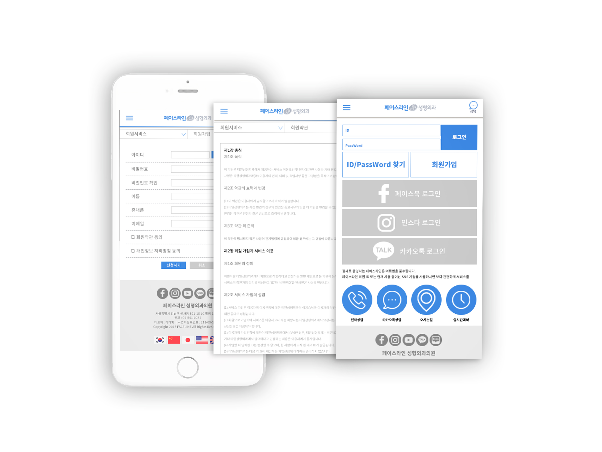

페이스라인성형외과
OVERVIEW
페이스라인성형외과는 20~30대 대생으로 렛미인에도 협찬성형외과 병원이다. 페이스성형외과의 렛미인 경력을 메인 슬라이더 밑에 보여주어 들어왔을때 바로 보일 수 있게 하였으며, 아래에 바로 연달아 동영상을 보여주어 이 병원에 대한 신뢰감을 주도록 유도하였다. 퀵버튼을 이용하여 상담 및 실시간예약을 통해 고객이 쉽게 접근할 수 있도록 하였다. 메뉴는 우측, 좌측을 사용하여 병원종목별 메뉴와 상담과 비용부분의 메뉴로 나뉘어 고객들이 쉽게 편리하게 이용할 수 있도록 하였다.
- TYPE.
- UI/UX App Design
- CLIENT.
- 페이스라인성형외과
- Individual work.
- 2017.07~2017.07 (1 Day)
- URL.
- 메인페이지, 서브1, 서브2,서브3
- 작업내역
- Photoshop, Illustrator


